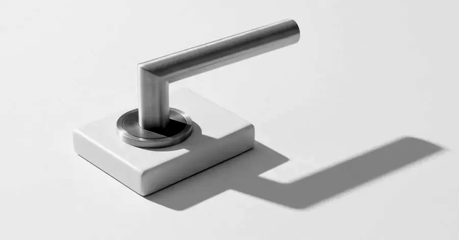
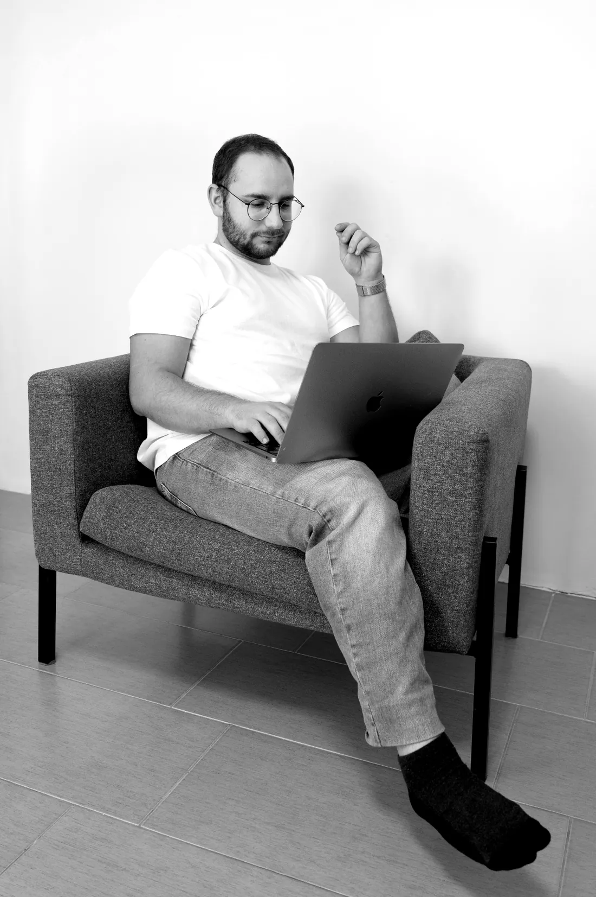
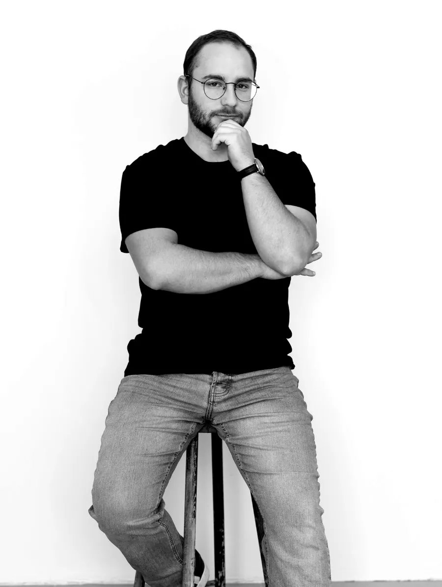

I. Az új kor első törvénye
A követőszám a régi kor relikviája.
10 000 követő, 40 kedvelés — ismerős? Az új korban minden poszt tiszta lappal indul. Nem az számít, hányan követnek, hanem hogy hányan nézik végig.
SocialStream · Interest media ügynökség · Est. 2022
A social media meghalt. Az érdeklődés vette át a helyét. Mi ebben a korban győzünk.
01Filozófia
Tíz évig az számított, hány követőd van. Ez a kor véget ért. A feed már nem azt mutatja, kit követsz — hanem azt, ami valóban érdekel.
Az algoritmus minden egyes megjelenést újraoszt: nem a múltad alapján, hanem aszerint, hogy ma érdekes vagy-e. A legtöbb vállalkozás még a régi kor szabályaival játszik: posztol és reménykedik.
Mi nem láthatóságot építünk, hanem rendszert, ami az érdeklődést bevétellé alakítja. És ez minden számon látszik.
A stream maradt. Ami benne folyik, az változott.
Igen, a nevünkben még ott a social. Megtartottuk, mert a stream ma is ugyanaz a hely: a végtelen feed, ahol az ügyfeled a napját tölti. Azt írtuk újra, hogy mi kerül bele.
I. Az új kor első törvénye
10 000 követő, 40 kedvelés — ismerős? Az új korban minden poszt tiszta lappal indul. Nem az számít, hányan követnek, hanem hogy hányan nézik végig.
II. Az új kor második törvénye
Minden megjelenésért a legjobb alkotókkal versenyzel, nem a konkurenciáddal. Ami érdekes, azt a platform ingyen viszi el milliókhoz. Ami unalmas, azt büdzsével sem lehet megmenteni.
III. Az új kor harmadik törvénye
Posztolni és reménykedni — ez volt a régi kor stratégiája. Az újé: adatból tudni, mi érdekli az embereket, és rendszert építeni, ami az érdeklődést bevétellé alakítja.
02Próbáld ki
Válts a 2014-es és a mai feed között. Aztán mondd meg a feednek, mi érdekel, és nézd meg, ki nyer: nem a legtöbb követővel rendelkező fiók, hanem a legérdekesebb poszt.
Szemléltető minta: a fiókok és posztok kitaláltak. A rangsor az érdeklődés-alapú feedek egyszerűsített modellje.
03A rendszer
Nem csak hirdetések — a teljes online jelenlétedet lefedjük, egyetlen csapattal. Válassz egy szolgáltatást, és megmutatjuk, mivel dolgozik együtt.
04Eredmények
Valódi kampányok, valódi dashboardok. Nyiss meg bármelyik számot a mögötte álló történetért.

05A teszt
Öt kérdés, egy perc. Az eredmény egyenesen az audit-kérésedbe kerül, így ott kezdjük, ahol valóban tartasz.
—Szándékosan válogatósak
Havonta legfeljebb két új partnerrel indulunk el — ennyit bír el a minőség.
Partnerek, nem kivitelezők.

06Az alapító
Dánia tanulmányaim alatt szereztem meg az első ügyfelemet. Aztán Meta Marketing Pro-ként közelről láttam, hogyan gondolkodnak a legkomolyabb márkák, amikor valódi pénz van a kampányban — és azt is, ahogy a régi szabályok a szemünk előtt érvényüket vesztik. Nem receptek, nem formulák, hanem rendszerek, adatok, és a platform valódi ismerete.
2022-ben azért alapítottam a SocialStreamet, mert ezt a gondolkodásmódot itthon nagyon kevés vállalkozás kapta meg eddig. Azóta 300M+ Ft büdzsét kezeltünk, és specialistákból, fanatikusokból álló csapatot építettem magam köré.
— Olivér, Alapító

Alapító · Kampánystratéga
Ő olvassa az új kor szabályait: adatból dönti el, mibe fektessük a figyelmet — és miért fogja azt bárki megnézni.

Kreatív · Tartalomgyártás
Ami megállítja a hüvelykujjat, az ő keze munkája. Hook-ok, forgatás, kreatív irány — az új kor nyelvén.

Produkció · Szerkesztés
A gyártás motorja. Nála áll össze nyersanyagból kész tartalom — vágás, ritmus, precizitás, határidőre.
A kamera mögött és előtt.
—Nem mi mondjuk. Ők mondják.
07Az audit
30 perces ingyenes audit — megnézzük a kampányaidat, a landing page-edet, az ajánlatodat. Megmondjuk őszintén, hol játszol még a régi kor szabályaival — még fizetés előtt.
Havonta max. két új partnerNincs kötelezettség